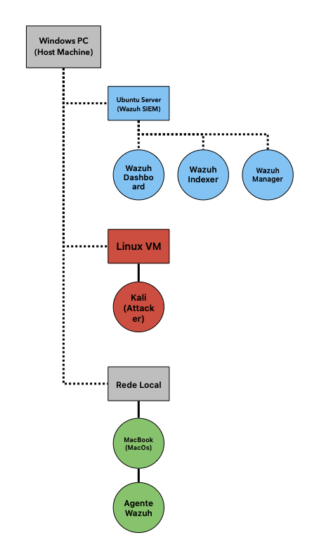
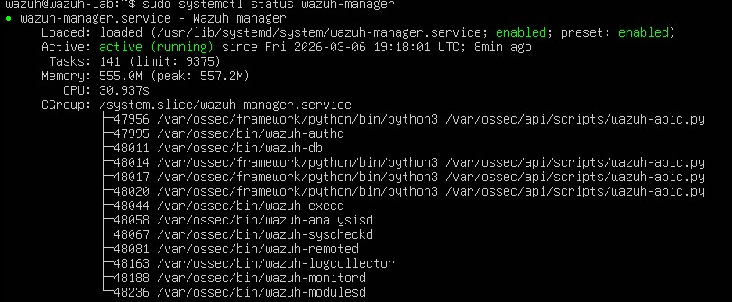
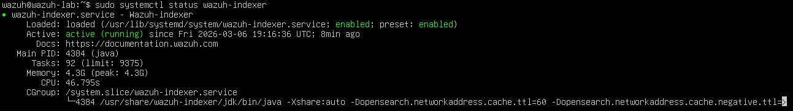
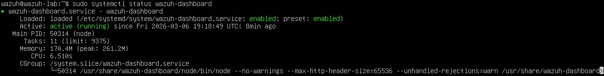
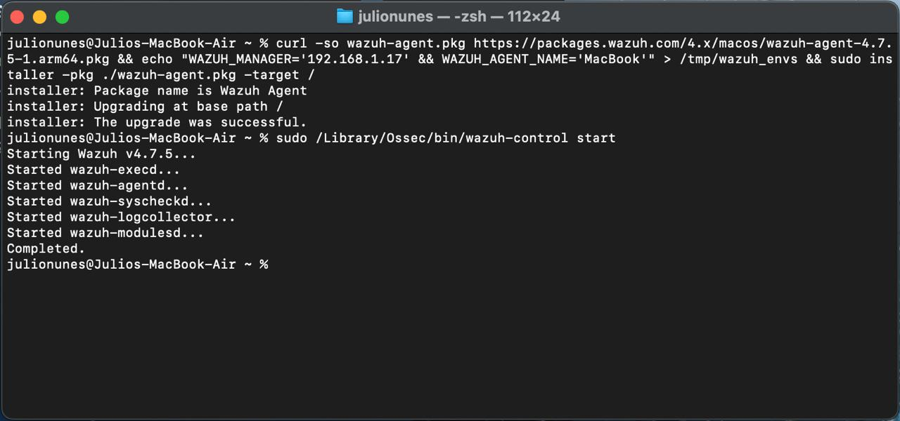
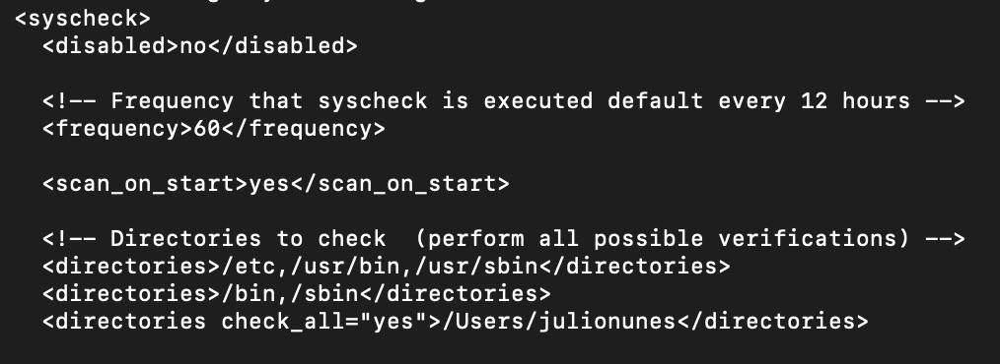
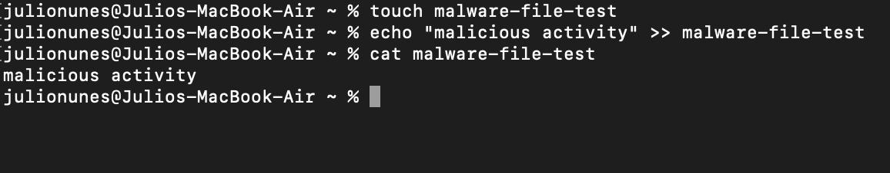
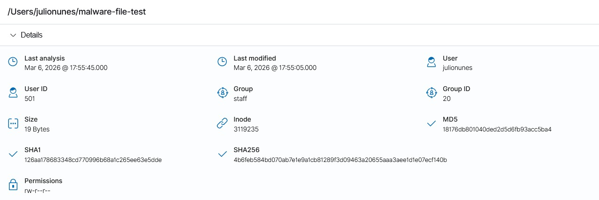
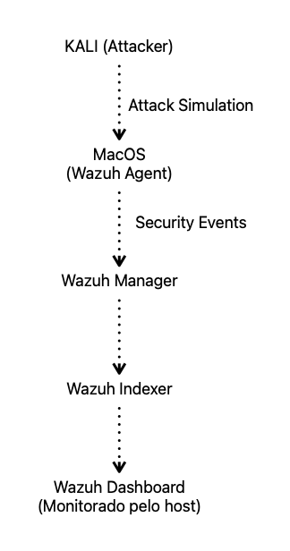

Este projeto demonstra a implementação de File Integrity Monitoring (FIM) utilizando o Wazuh para detectar alterações em arquivos dentro de um sistema monitorado. O laboratório simula um cenário de monitoramento realizado em um Security Operations Center (SOC).
O objetivo deste laboratório é demonstrar como o File Integrity Monitoring pode identificar alterações não autorizadas em arquivos do sistema. O ambiente monitora eventos como criação, modificação e exclusão de arquivos, gerando alertas de segurança.
O ambiente consiste em um servidor Wazuh responsável pela análise de logs e um endpoint monitorado com o agente Wazuh instalado. O agente coleta eventos do sistema e envia as informações para o servidor, onde os dados são analisados e transformados em alertas.

O Wazuh Manager foi instalado em um servidor Linux e configurado para receber eventos de um agente instalado no sistema monitorado. O módulo de File Integrity Monitoring foi configurado para monitorar diretórios específicos do sistema.
O print abaixo, mostra o daemon com status enabled, indicando o funcionamento correto.

De mesma maneira, abaixo o daemon com status enabled, indicando novamente um funcionamento de acordo com o esperado.

De mesmo modo, daemon de dashboard enabled

Foi realizada a instalação de um agente do Wazuh em um MacBook pessoal localizado na mesma rede do servidor. O agente foi configurado para se comunicar com o endereço IP do servidor Wazuh Manager, conforme demonstrado na imagem abaixo.

O módulo FIM foi configurado para acompanhar alterações em arquivos dentro de diretórios monitorados (Conforme Imagem). O sistema detecta eventos como criação, modificação e exclusão de arquivos. Quando uma alteração ocorre, o evento é enviado ao servidor Wazuh para análise e geração de alertas.

Para simular atividade suspeita, um arquivo foi criado e posteriormente modificado dentro de um diretório monitorado. O Wazuh detectou a alteração e gerou um alerta indicando a modificação no sistema.

A detecção do log foi feita pelo dashboard, visualizado pelo host (Windows 11). Nessa etapa, em um ambiente organizacional, se realiza a análise do log juntamente com outras ferramentas disponibilizadas pela infraestrutura de um SOC

Este laboratório demonstra como o File Integrity Monitoring pode ser utilizado para identificar alterações suspeitas em arquivos e auxiliar analistas de segurança na detecção de possíveis incidentes dentro de um ambiente monitorado. – Essa atividade é essencial dentro de um SOC, pois arquivos críticos são alvos de muitos hackers.
